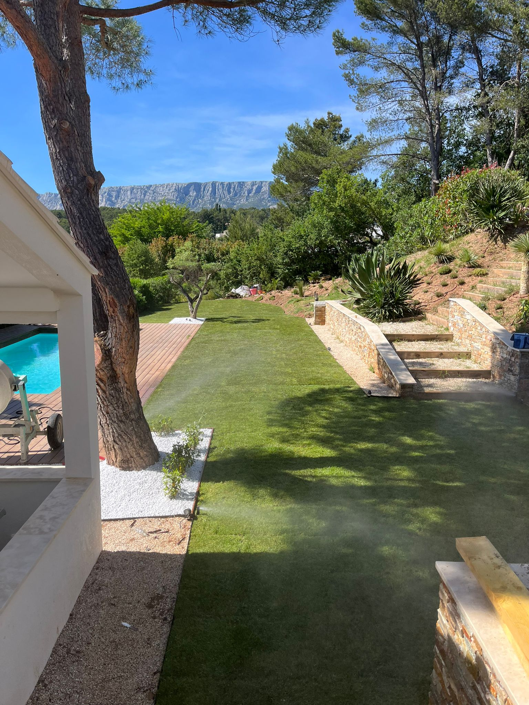

Nos prestations de
paysagisme en Provence
Chaque projet est pensé selon votre terrain, votre style de vie et le climat provençal. Végétaux adaptés à la sécheresse, fondations solides, résultat durable.

Création de Jardins
Vous rêvez d'un jardin méditerranéen à votre image ? Terra Provençale conçoit et réalise votre jardin sur mesure, de A à Z. Végétaux adaptés à la sécheresse, espaces de vie extérieurs, massifs fleuris — votre jardin devient une extension naturelle de votre maison.
En savoir plus
Terrassement & Enrochement
Préparer un terrain en Provence demande une expertise adaptée au relief et à la géologie locale. Terra Provençale réalise vos travaux de terrassement et d'enrochement : modelage du terrain, pose de pierres naturelles, talus stabilisés. Des fondations solides pour un aménagement durable.
En savoir plus
Arrosage Automatique
Face aux restrictions d'arrosage estivales en PACA, un système d'arrosage automatique bien conçu est un investissement indispensable. Terra Provençale installe des réseaux sur mesure, économes en eau, programmables et adaptés à vos végétaux. Un jardin toujours vert, sans effort.
En savoir plus
Entretien de Jardins
Un jardin entretenu régulièrement, c'est un jardin qui garde toute sa valeur. Terra Provençale assure la taille de vos haies, l'élagage de vos arbres et oliviers, le désherbage et la tonte de vos pelouses. Intervention ponctuelle ou contrat annuel — nous nous adaptons à vos besoins.
En savoir plus
Plantation
Oliviers, lavandes, cyprès, agaves — Terra Provençale sélectionne et plante des espèces adaptées au terroir provençal : résistantes à la chaleur, au mistral et à la sécheresse.
En savoir plus
Petite Maçonnerie Paysagère
Les détails font la différence. Terra Provençale réalise vos murets en pierre naturelle, allées, escaliers extérieurs et bordures pour sublimer votre espace. Des finitions soignées, dans le respect des matériaux nobles et des traditions provençales.
En savoir plus